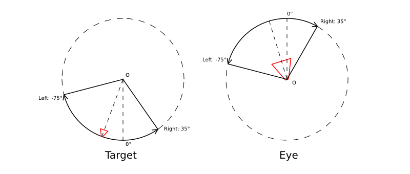
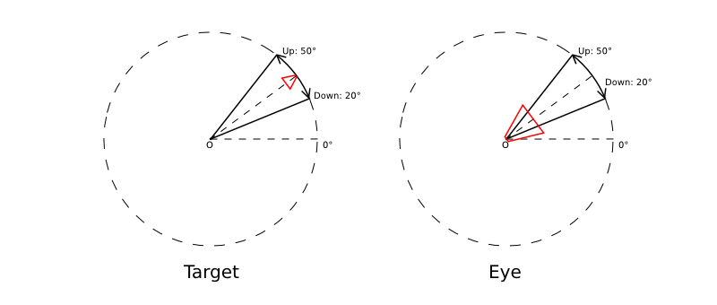
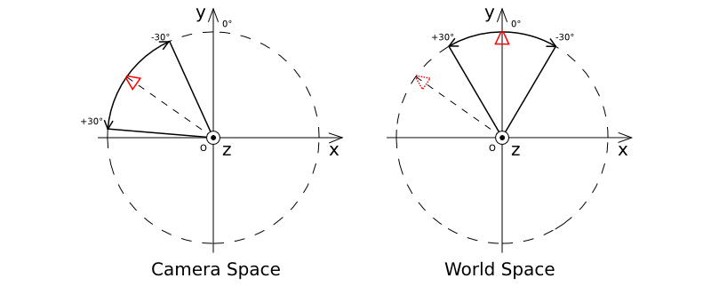
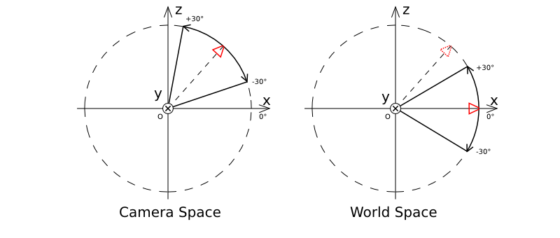

Камера¶
Режимы управления и общие настройки¶
Настройки камеры выставляются в панели Properties на вкладке Object Data.

- Blend4Web > Move style
Режим управления камерой:
- Target
По умолчанию камера находится в режиме вращения вокруг некоторой точки. Положение точки вращения может быть изменено (см. панорамирование).
- Eye
Режим взгляда позволяет осуществлять вращение и перемещение от первого лица.
- Hover
В режиме нависания камера движется параллельно горизонтальной плоскости.
- Static
В статическом режиме изменение положения камеры осуществляется посредством анимации или через API.
- Blend4Web > Target location
- Доступно в режиме Target. Позиция точки, относительно которой будет вращаться камера. Кнопка Copy Cursor Location позволяет скопировать текущее положение курсора.
- Blend4Web > DOF front distance
- Описано в разделе Глубина резкости камеры.
- Blend4Web > DOF rear distance
- Описано в разделе Глубина резкости камеры.
- Blend4Web > DOF power
- Описано в разделе Глубина резкости камеры.
Скорость движения камеры¶
Для камеры доступно несколько настроек скорости движения.
- Blend4Web > Translation velocity
- Доступно в режимах Target, Eye, Hover. Задаёт скорость перемещения камеры.
- Blend4Web > Rotation velocity.
- Доступно в режимах Target, Eye, Hover. Задаёт скорость вращения камеры.
- Blend4Web > Zoom velocity
- Доступно в режимах Target, Hover. Задаёт скорость приближения камеры к опорной точке.
Значение параметров по умолчанию: Translation velocity, Rotation velocity - 1, Zoom velocity - 0.1.
Допустимые значения параметров: Translation velocity, Rotation velocity - \(\left[0,\ \infty \right)\), Zoom velocity - \(\left[0,\ 1\right)\)
Ограничения движения камеры¶
Для камеры доступно несколько настроек, ограничивающих её движение тем или иным образом. Они объединены в группу Camera limits.

Виды ограничений
- Blend4Web > Use distance limits
- Доступно в режимах Target и Hover. Для камеры типа Target параметры задают минимальное и максимальное расстояния от камеры до точки вращения.
Варианты интервалов для камеры типа Target:
- Max > Min
Расстояние от камеры до объекта ограничено интервалом [Min, Max].
- Max = Min
Фиксирование камеры на определенной высоте над объектом.
- Max < Min
Ограничение движения отсутствует.
{kind=link}
Значения по умолчанию: Min = 1, Max = 100.
Для камеры типа Hover параметры задают минимальное и максимальное расстояния от камеры до точки пересечения (опорная точка) направления взгляда камеры с горизонтальной плоскостью (по умолчанию с плоскостью OXY мировых координат в Blender’е).
Варианты интервалов для камеры типа Hover:
- Max > Min
Расстояние от камеры до опорной точки ограничено интервалом [Min, Max].
- Max = Min
Фиксирование камеры на определенном расстоянии до опорной точки.
- Max < Min
Камера свободно движется вдоль оси OZ мировых координат в Blender’е, опорная точка не задана.
Значения по умолчанию: Min = 1, Max = 100.
- Blend4Web > Use horizontal translation limits
- Доступно в режиме Hover. Ограничение перемещения опорной точки по оси OX в мировых координатах в Blender’е.
Варианты интервалов:
- Max > Min
Ограничение перемещения опорной точки интервалом [Min, Max].
- Max = Min
Фиксированное положение опорной точки.
- Max < Min
Отсутствие ограничений.
Значения по умолчанию: Min = -100, Max = 100.
- Blend4Web > Use vertical translation limits
- Доступно в режиме Hover. Ограничение перемещения опорной точки по оси OY в мировых координатах в Blender’е.
Варианты интервалов:
- Max > Min
Ограничение перемещения опорной точки интервалом [Min, Max].
- Max = Min
Фиксированное положение опорной точки.
- Max < Min
Отсутствие ограничений.
Значения по умолчанию: Min = -100, Max = 100.
- Blend4Web > Camera angle limits
- Доступно в режиме Hover при включенной опции Blend4Web > Use distance limits. Ограничение угла наклона камеры (угла между направлением взгляда камеры и горизонтальной плоскостью).
Варианты интервалов:
- Max > Min
Ограничение поворота камеры интервалом [Min, Max].
- Max = Min
Наклон камеры зафиксирован, расстояние от камеры до опорной точки равно значению Min поля Blend4Web > Use distance limits.
- Max < Min
Отключение опции Blend4Web > Use distance limits.
Допустимые значения: 0 \(\le\) Min, Max \(\le\) 90.
Значения по умолчанию: Min = 0, Max = 90.
- Blend4Web > Use panning mode
- Доступно в режиме Target. Разрешить панорамное перемещение камеры.
- Blend4Web > Use horizontal rotation
- Доступно в режиме Hover при включенной опции Blend4Web > Use distance limits. Разрешить вращение камеры в горизонтальной плоскости относительно опорной точки.
- Blend4Web > Use horizontal rotation clamping
- Доступно в режимах Target и Eye. Ограничение горизонтального вращения камеры относительно точки вращения (в режиме Target) или относительно своего местоположения (в режиме Eye).
Направление от Left к Right считается положительным и для режима Target совпадает с направлением против часовой стрелки, а для режима Eye - по часовой стрелке:
{kind=link}
Значения по умолчанию: Left = -180, Right = 180.
- Blend4Web > Use vertical rotation clamping
- Доступно в режимах Target и Eye. Ограничение вертикального вращения камеры относительно фиксированной точки (в режиме Target) или относительно своего местоположения (в режиме Eye).
Направление от Down к Up считается положительным:
{kind=link}
Если включена опция Use horizontal rotation clamping, то вертикальное вращение будет ограничено, по крайней мере, интервалом [-90, 90].
Значения по умолчанию: Down = -90, Up = 90.
Особенности значений, ограничивающих поворот
- Перемена мест значений Left/Right или Down/Up приводит к движению по противоположной дуге окружности вращения.
{kind=link}
- Left = Right, Up = Down - фиксирование камеры соответственно по горизонтали или вертикали.
Отсчет углов поворота
При ограничении горизонтального и вертикального вращения можно выбрать пространство координат:
- Camera space
Все углы отсчитываются относительно начального положения и ориентации камеры.
- World space
Горизонтальные углы отсчитываются относительно направления оси Y в пространстве мировых координат, вертикальные - относительно горизонтальной плоскости XOY в мировом пространстве.
Для ограничения по горизонтали:
{kind=link}
Для ограничения по вертикали:
{kind=link}
Оси координат, отмеченные на рисунках, совпадают с осями мировых координат в Blender’е.
По умолчанию назначается вариант Camera space.